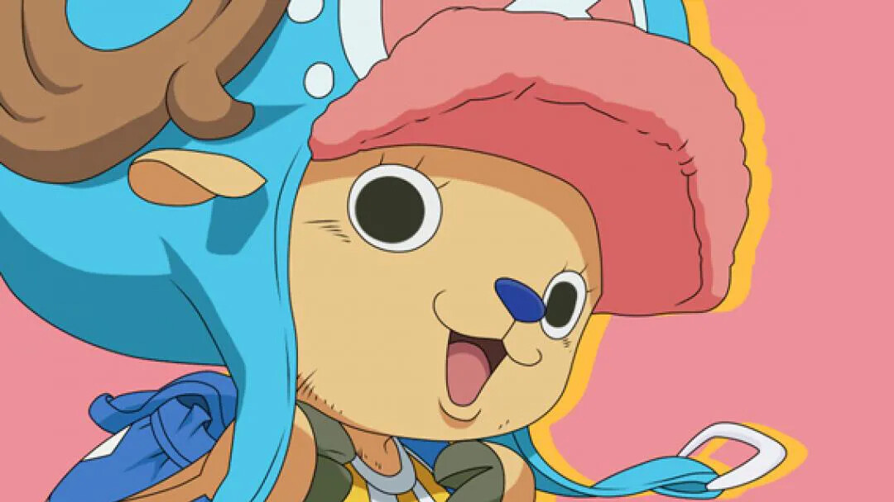

Sobre mí
Soy un reno que comió la fruta Hito Hito (fruta persona) y el médico de la tripulación de los Piratas de Sombrero de Paja. ¡Me encanta el algodón de azúcar!.
Tripulación
Piratas del Sombrero de Paja

Contacto
- DIRECCIÓN: Thousand Sunny Go
- TELÉFONO: 1000-ALGODON
- CORREO: dr_tony_azucar@hotmail.com
Idiomas
- Japonés
- Animalia

Formación
Vasto conocimiento médico y de fármacos, capaz de elaborar remedios y pociones a partir de vegetales y raíces.
Sus profesores fueron el Dr. Hiruluk y la Dra. Kureha, grandes médicos del reino de Drum.
Habilidades
- Médico
- Timonel
- Luchador
Transformaciones
- Brain Point
- Heavy Point
- Arm Point
- Guard Point
- Kung Fu Point
- Monster Point
- Jumping Point
- Walk Point